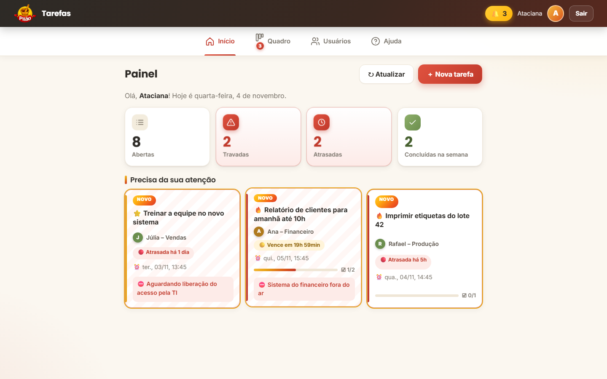
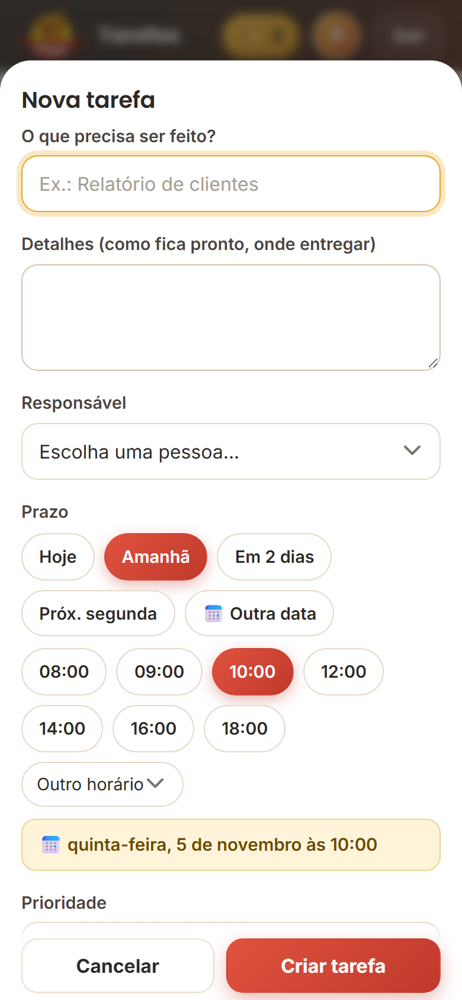
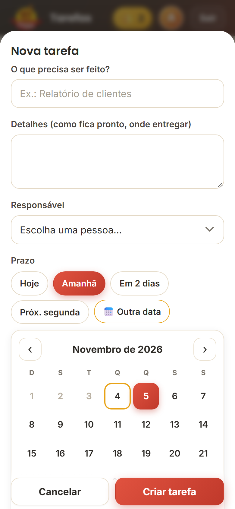
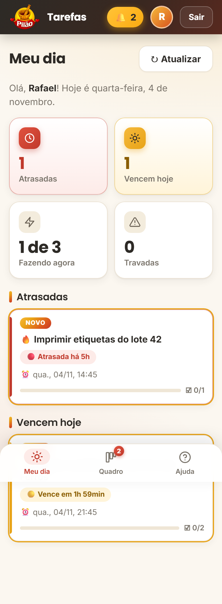
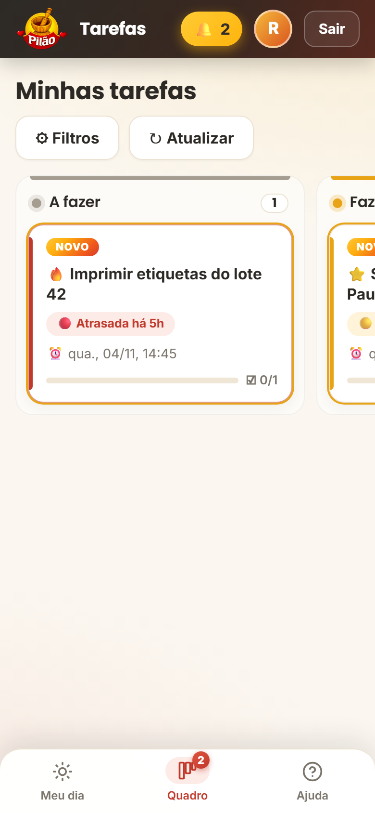
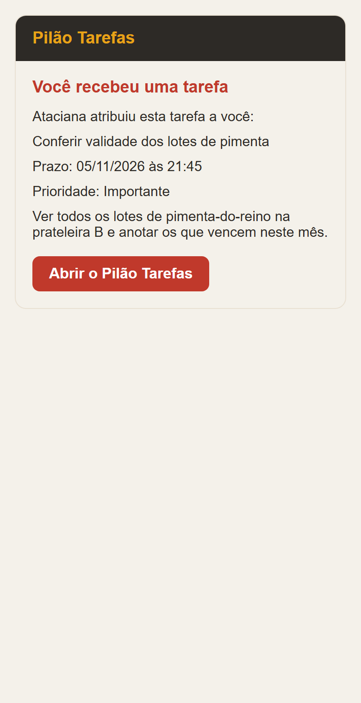
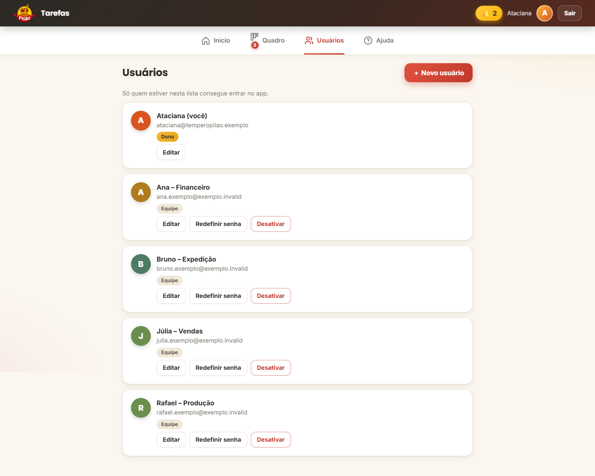
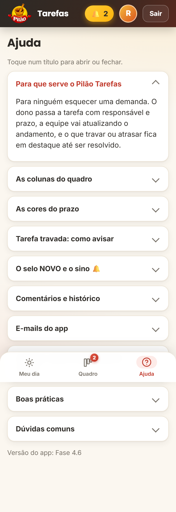

Uma volta por cada tela, com as telas reais da demonstração.
Quatro contadores (abertas, travadas, atrasadas e concluídas na semana) e a lista "Precisa da sua atenção", com as travadas e as atrasadas primeiro.

No computador, arraste o cartão com o mouse. No celular, segure o cartão e arraste com o dedo (ou use os botões dentro da tarefa).
 1234
1234Título, detalhes, responsável e prazo com botões (Hoje, Amanhã, Em 2 dias, Próxima segunda) ou calendário próprio. Prioridade e checklist são opcionais.


 1234
1234O funcionário abre o app e vê: atrasadas, vencem hoje, quantas está fazendo agora (de 3) e se há algo travado. Embaixo, as tarefas que precisam de atenção.


Quando uma tarefa é atribuída, o responsável recebe um e-mail com prazo, prioridade e botão para abrir o app. Funciona também para comentários, tarefas travadas e prazos vencendo (o chefe escolhe quais avisos ligar). Como o Gmail avisa no celular, não precisa de nada a mais.

Cadastrar, editar, desativar (a pessoa é desconectada na hora) e redefinir senha. O app garante que sempre exista pelo menos um dono ativo.

Explica as colunas, o limite de 3, o que fazer ao travar e como pôr o app na tela inicial. Quem esquece como se usa não precisa perguntar.
